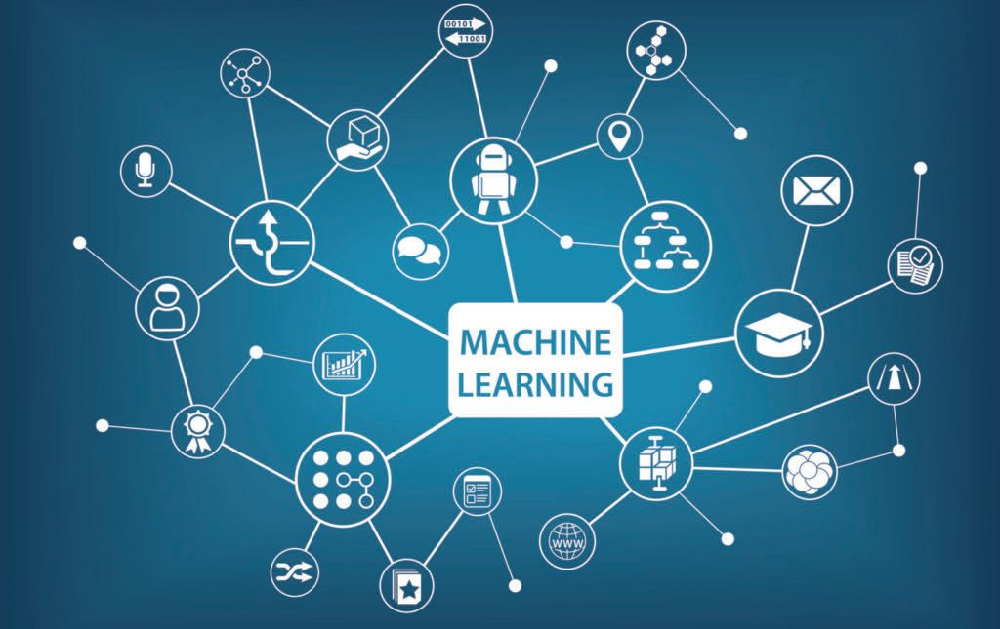

Research

Machine Learning
Applications of machine and deep learning in security and privacy fields.

Machine Learning Robustness
Exploring machine learning algorithms robustness, proposing novel approaches to detect adversaries.

Natural Language Processing
Using NLP in data analysis and clustering in different security applications.